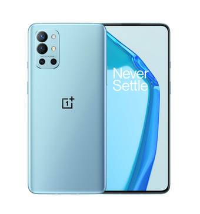

| 手机名称 | 一加9R | 内存与容量 | 内存：8GB / 12GB LPDDR 4X 四通道大内存 存储：128GB / 256GB UFS 3.0 双通道闪存 |  |
| 外观尺寸 | 高度：160.7 mm 宽度：74.1 mm 厚度：8.4 mm 重量：189g | 屏幕与指纹 | 尺寸：6.55 英寸 分辨率：2400 X 1080 像素 402 ppi 比例：20:9 材质：柔性 AMOLED 120Hz 瞳孔屏 支持 sRGB、Display P3 正面玻璃：康宁® 大猩猩® 玻璃 | |
| 处理器 | CPU：高通骁龙™ 870 移动平台 5G 芯片：X55 GPU：Adreno 650 | 充电与电池 | 2 x 2100mAh/16.25Wh（额定值） 2 x 2150mAh/16.64Wh（典型值） 快速充电：支持 SuperVOOC 2.0、SuperVOOC、VOOC 3.0、PD（9V/2A）、QC（9V/2A）快速充电协议 | |
| 影像系统 | 后置主摄像头 传感器：Sony IMX586 像素：4800 万像素 像素尺寸：0.8 µm / 4800 万像素；1.6 µm （四合一 / 1200 万像素） 镜头片数：6P OIS 光学防抖：支持 EIS 电子防抖：支持 光圈：ƒ/1.7 大光圈 超广角摄像头 像素：1600 万像素 光圈：ƒ/2.2 视场角：123°超广角 微距摄像头 像素：500 万像素 黑白风格镜头 像素：200 万像素 闪光灯 前置摄像头 传感器：Sony IMX471 像素：1600 万像素 像素尺寸：1.0µm EIS 电子防抖：支持 光圈：ƒ/2.4 | |||
| 传感器 | 屏幕指纹传感器 加速度传感器 M-sensor 电子罗盘 陀螺仪 光线传感器 距离传感器 Sensor Core Flicker-detect Sensor | |||